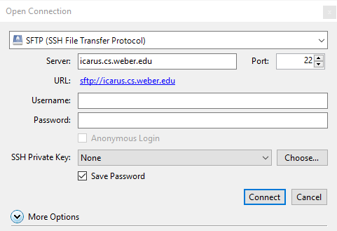
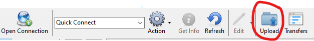
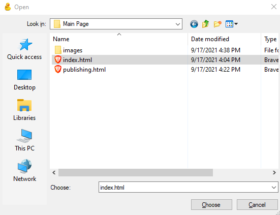
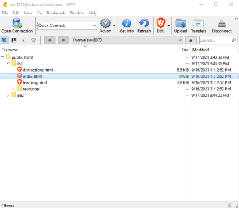

When uploading a webpage to the web, you'll first need a hosting service. I'll be using the Icarus Web Server
hosting. You'll also need a ftp tool. I'll be using PuTTY to connect to the server and using Cyberduck to
transfer files.
Putty can be found here.
Cyberduck can be found here.
When logging into the server with PuTTY you'll need to connect to the correct host name. That name being icarus.cs.weber.edu as seen in the photo above, as well as the correct port number being 22. Once you hit enter or open at the bottom, it will ask you to sign in. Your username will be your initials followed by the last 5 digits of your W number. Your password will be your full first name with the first letter capitalized, followed by "cs!"
For example, if your name was John Smith with the W number W01234567 then your username would be js34567. and your password would be Johncs!
To connect to the server in Cyberduck you will click the open connection button as seen above. After that you will be prompted to connect to a server, along with your login information. The login information will be the same as it was for PuTTY. Initials followed by the last 5 numbers of your W number for your username, and your first name with the first letter capitalized with "cs!" at the end for your password.

You will need to connect to the server. Again it will be icarus.cs.weber.edu for the server name. Make sure it's on Port 22, and make sure the drop down menu at the top is set to SFTP otherwise this will not work. If a window pops up and says Unknown fingerprint, just hit allow.
After doing all of the above just hit connect and it will show a public_html folder. This is where you'll upload your files.
When uploading things to the icarus server, make sure all of your files go inside of the public_html folder. This can be done by either double clicking on the folder to open it, or uploading the files, and moving them in after. To start uploading files/folder you'll click the Upload button as shown below.
To upload a folder you'll the click once on the folder until it is highlighted, and click choose at the bottom to upload it. This will upload it into the icarus server. Make sure this folder is inside the public_html folder.
To upload separate files it's the same as folder, but you'll double click on each folder until you find the file or folder you want. You can then drag to select several items, or hold shift and click several items, or just choose one file. It will show up in the box above choose, and you'll click choose and it will upload.
To compose the URL for your webpage it fairly simple. You'll first type in the server name, in our case it's icarus.cs.weber.edu with a forward slash. After you'll enter in the folder name (if there is one) with another forward slash. If your webpage is embeded inside several folder's you'll keep adding the folder names after the first until you reach the folder your webpage is in. After you will type in the main page for your webiste followed by .html and that is your website.

Based on the photo above, and index.html being my home page, I'll first start by typing icarus.cs.weber.edu/ followed by la2/ for the folder it's in, followed by index.html
So the entire URL would be icarus.cs.weber.edu/la2/index.html and that would connect to that webpage.